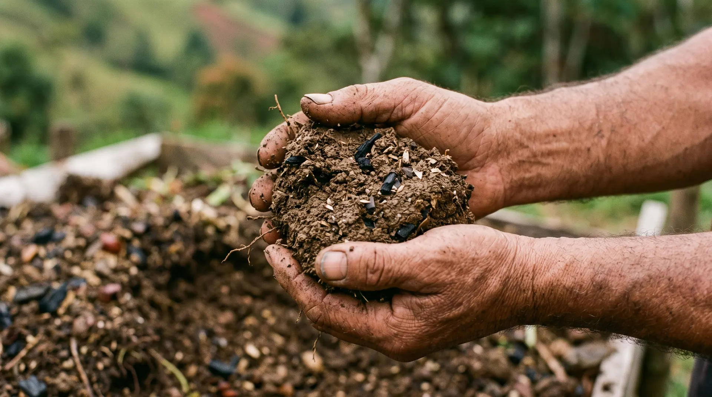
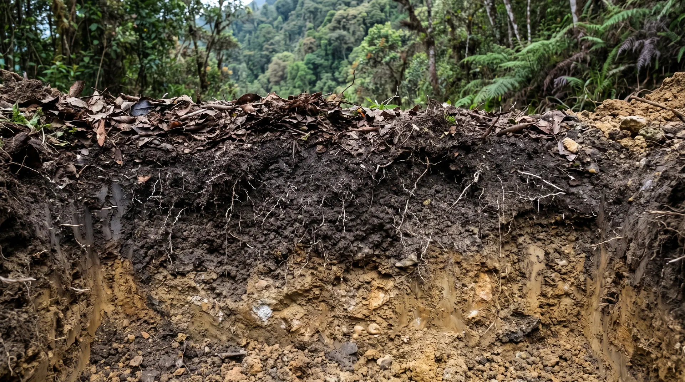
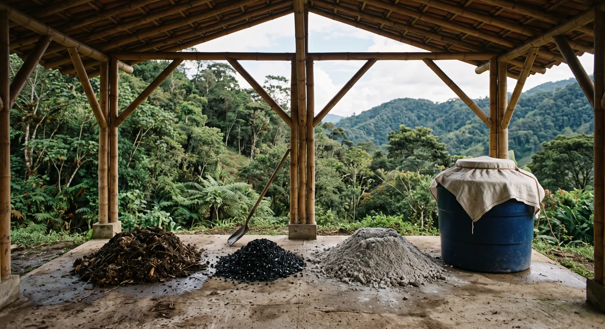
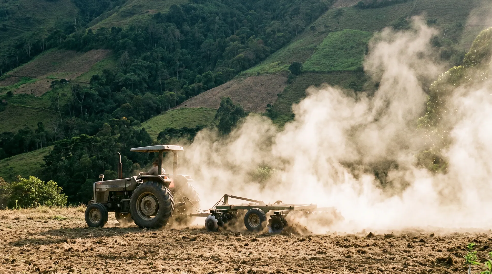
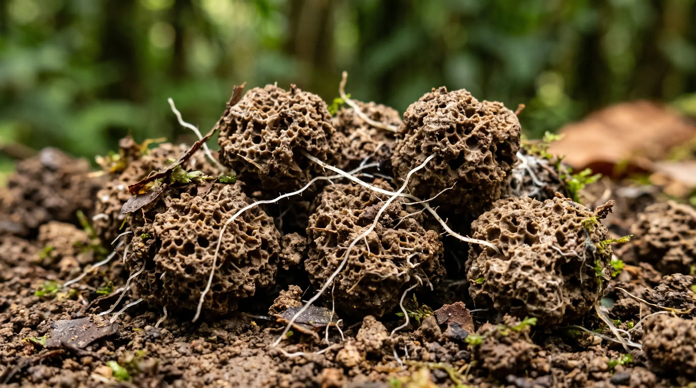
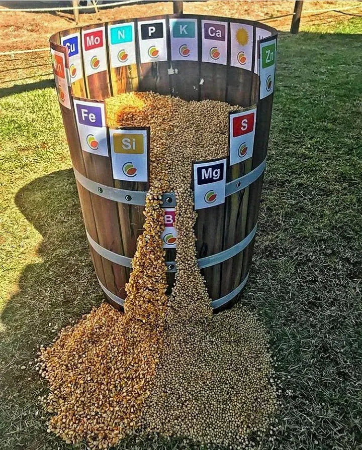
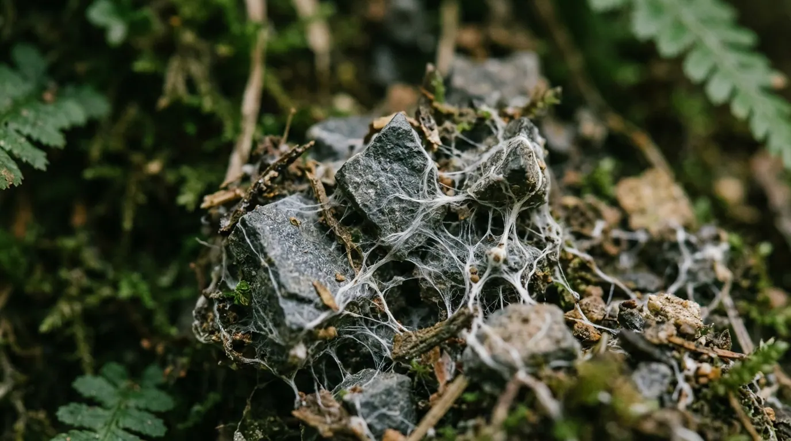
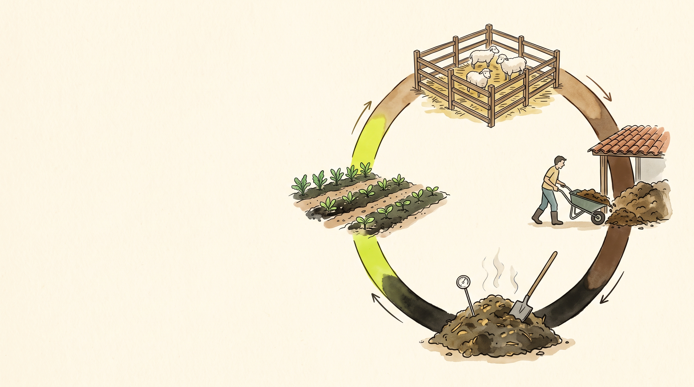
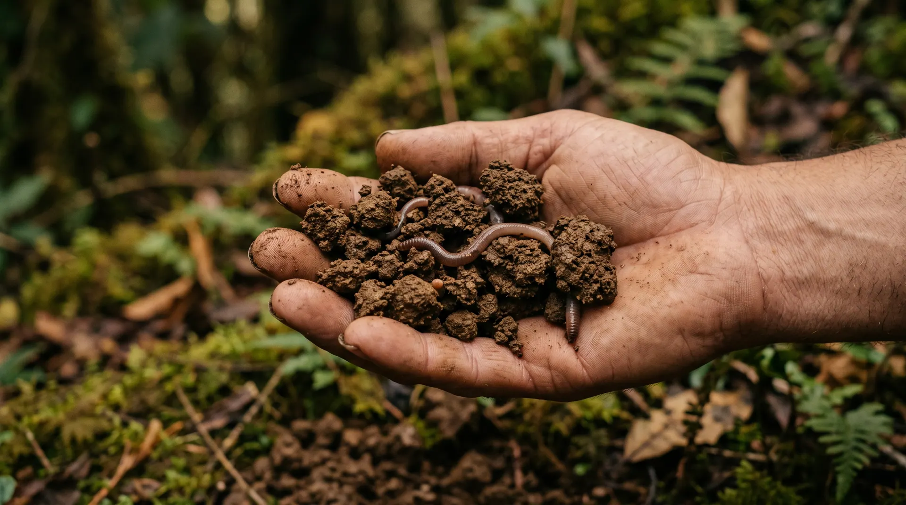
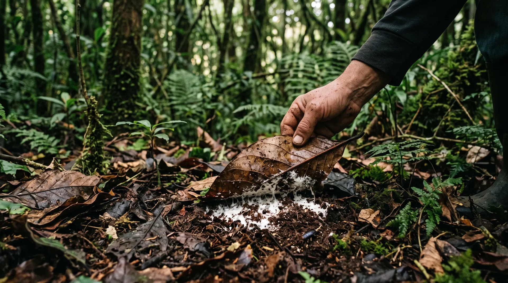

Nutrimos
suelo
Materia orgánica, minerales y la cuenta de tu biofábrica.
Ya tienes a los
que traducen.
El mantillo está sellado en el tarro. Pero un traductor sin material no sirve de nada. Esta semana es la comida: materia orgánica y minerales.
Los 7 principios de
inmunidad del bosque
Con estos tres juntos ya tienes el trípode completo: clima, biología y comida.
Tres cosas que te llevas hoy
La planta pide.
El suelo entrega.
La comida y la casa de todo el sistema.
Los que traducen. Eso ya lo viste la semana pasada.
La despensa. Lo que ningún microorganismo puede inventar.

Un suelo sano es mitad vacío
Compactar un suelo le roba el 50 % que no se ve. Por eso no se pisan las camas.
Toda sustancia de origen biológico
Microorganismos y raíces, vivos o muertos.
Plantas y animales en descomposición, menores de 2 mm.
Sustancias húmicas. El producto final y estable.
Dato que sorprende: la lombriz que levantas al voltear el bocashi no cuenta. Nada por encima de 2 mm cuenta.

Tres velocidades del mismo carbono
Fermentación dirigida. Energía casi inmediata para el cultivo que entra.
Descomposición aeróbica completa. Alimenta la fracción particulada.
Carbono pirolizado a 500 °C. Se queda como casa porosa.
Por eso el bocashi lleva biochar adentro: en el mismo volteo entra el pan de hoy y la despensa del siglo.

La mitad del carbono
se fue con el arado
Esa misma cifra leída al revés es el potencial de captura que tiene tu finca.

Queda mejor guardada
- Suelo pobre: lo poco que hay está suelto en la superficie, expuesto.
- Suelo en recuperación: queda atrapada dentro de los agregados.
- Suelo maduro: una parte se asocia a los minerales y dura décadas.
Aplicar bocashi todos los meses mueve el suelo de un escalón al siguiente.

El barril que
lo vendió todo
Lo que acertó: el rendimiento lo limita el elemento más escaso, no el que sobra. Eso sigue siendo cierto.
Lo que se volvió negocio: un barril de doce duelas. Si solo hay doce elementos esenciales, basta con comprar doce productos.
La despensa completa
| Elemento | Contenido | Elemento | Contenido |
|---|---|---|---|
| Silicio | 45 – 52 % | Potasio | 2 – 4 % |
| Calcio | 15 – 18 % | Sodio | 1 – 3 % |
| Magnesio | 8 – 12 % | Hierro | 7 – 10 % |
Más trazas de hasta 70 elementos: titanio, bario, cobalto, cobre, zinc, molibdeno, boro y muchos más.

La roca no se
disuelve en agua
Se libera con los ácidos de los solubilizadores. Sin la microbiota de la semana pasada, la harina de roca se queda ahí como arena cara.
Por eso va adentro del bocashi y del tarro de microorganismos, no suelta sobre el lote.
Dónde va la harina de roca
Durante la preparación, con el resto de los secos.
Superficial, una sola vez, cuando se estrena el lote.
Al establecer botón de oro o bore.
Bien molida, en polvo y no en gránulos. Con máscara: es polvo mineral.
El tamaño de tu biofábrica
lo deciden tus animales.
La pregunta de siempre es cuánto bocashi hacer. La respuesta no sale del cultivo: sale del corral. Vamos a hacer la cuenta juntos.
Cuánto estiércol sale al mes
| Animal | Estiércol fresco al mes | 10 animales |
|---|---|---|
| Gallina ponedora | 3 – 4 kg | 35 kg |
| Cordero u oveja | 40 – 50 kg | 450 kg |
| Cerdo de levante | 100 – 130 kg | 1,1 t |
| Bovino adulto | 700 – 800 kg | 7,5 t |
Rangos de referencia para estimar. Pesa una semana de tu propio corral y ajusta el número.

Bocashi, medido
en partes
- 55 partes de estiércol con cisco.
- 5 partes de tierra del predio.
- 5 a 6 partes de biochar.
- 1 de salvado y 1 de harina de roca.
- Melaza diluida para bañar.
Una parte puede ser una carretilla, un balde o una pala. Lo único que importa es usar siempre la misma.
Un ejemplo con 20 corderos
Haz la misma cuenta con tus animales. Si el número te queda corto, la salida está en ampliar el módulo pecuario antes que en comprar abono.
La tabla que se pega en la biofábrica
| Dónde | Dosis | Cuándo |
|---|---|---|
| Terraza nueva | 5 – 10 kg / m² | Enmienda de fondo, al abrirla |
| Hortalizas establecidas | 1 – 2 kg / m² | Antes de cada siembra |
| Frutales | 5 – 10 kg / planta al año | Repartido en 2 o 3 veces |
| Potreros en rotación | 500 – 1.000 kg / ha | Después del pastoreo |
Todo lo que produces en un mes se aplica ese mismo mes.
El análisis reporta carbono
Ese es el factor para pasar de porcentaje de carbono orgánico a porcentaje de materia orgánica. Un análisis con 2,3 % de carbono equivale a 3,96 % de materia orgánica.
La meta es que ese número suba año a año en el mismo lote, medido en la misma época.
La prueba del rulo
| Textura | Filamento 3 mm | ¿Se dobla? | Filamento 1 mm | ¿Se dobla? |
|---|---|---|---|---|
| Arenosa | No | No | No | No |
| Franca | Sí | No | Sí | No |
| Limo-arcillosa | Sí | Sí | Sí | No |
| Arcillosa | Sí | Sí | Sí | Sí |
Adaptado de Jordán López, A. (2006). Manual de Edafología. Universidad de Sevilla.
Tres suelos, la misma receta
Retiene poca agua y pocos nutrientes. Subir materia orgánica sin miedo.
El ideal para hortalizas. Mantenerlo es todo el trabajo.
Retiene mucho pero drena mal. Materia orgánica para descompactar.
Tres diagnósticos distintos y una sola respuesta. Esa es la gracia del Principio 3.

Qué tan apretado
y qué tan habitado
Y la otra medida: levanta una piedra y cuenta. En un suelo vivo hay hasta dieciséis grupos distintos.

Cinco preguntas, cero equipos
- Agua: ¿entra rápido o se encharca?
- Cobertura: ¿hay hojarasca encima o está desnudo?
- Vida: ¿cuántas lombrices por metro cuadrado?
- Olor: a tierra fresca bueno, a nada regular, a podrido malo.
- Color: oscuro es materia orgánica, rojizo es mineral desnudo.
Compost, biochar y bocashi
Cada sistema por separado, con la preparación y el manejo en campo. La prueba del puño está en el minuto del bocashi.
Cuatro reglas para todo
- Superficial y en línea sobre la planta, sin enterrar.
- Nunca sobre suelo desnudo: se evapora, se lava o se oxida.
- Temprano en la mañana o al atardecer, nunca con sol fuerte.
- Registra qué, cuánto, dónde y qué día.
La cosecha anterior calibra la siguiente. Sin registro, cada año se empieza de cero.

El paradigma cabe
en tres renglones.
- Materia orgánica: el compost, el bocashi y el biochar.
- Microorganismos: el mantillo que recogiste la semana pasada.
- Minerales: la harina de roca que va adentro de todo lo anterior.
La planta pide. El suelo entrega.
Dimensiona tu biofábrica.
- Cuántos animales tienes y cuánto estiércol sale al mes.
- Cuántos kilos de bocashi salen de ahí y cuántos metros cubren.
- Si ya tienes análisis de suelo, trae el porcentaje de carbono.
Con ese número sabrás si tu módulo pecuario alcanza para el área que quieres sembrar.
Formulario en la comunidad · antes del próximo miércoles
Principio 4 · Diversidad
Qué sembrar y cada cuándo
Los videos se liberan el lunes: el sistema de rotación por fases de La Huerta, de recuperadoras a frutos pesados.
Entregamos la calculadora de siembra y hacemos el taller de uso en vivo.